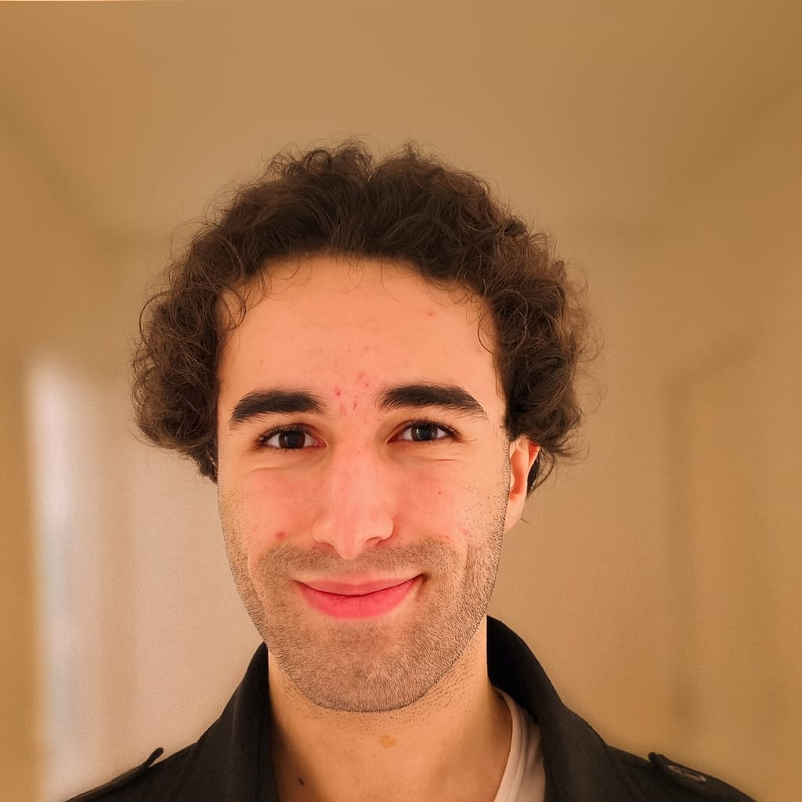

Recherche d'alternance
Profil Étudiant
Avci Semih.
Étudiant en BUT Réseaux & Télécoms
Passionné depuis mes 14 ans par la cybersécurité, je suis actuellement en formation à l'IUT Clermont Auvergne.
Mon parcours scientifique (Baccalauréat Général avec les spécialités Maths/Sciences de l'ingénieur/NSI, Licence Maths-Informatique) m'a permis de développer ma rigueur. Aujourd'hui, je souhaite mettre ma rigueur, ma patience et mon organisation au service d'une entreprise.
Objectif : rejoindre une entreprise en alternance pour mettre mes compétences en pratique. Rythme de formation : un mois à l’école et un mois en entreprise.
Me Contacter
Clermont-Ferrand
•
BUT Réseaux & Télécoms